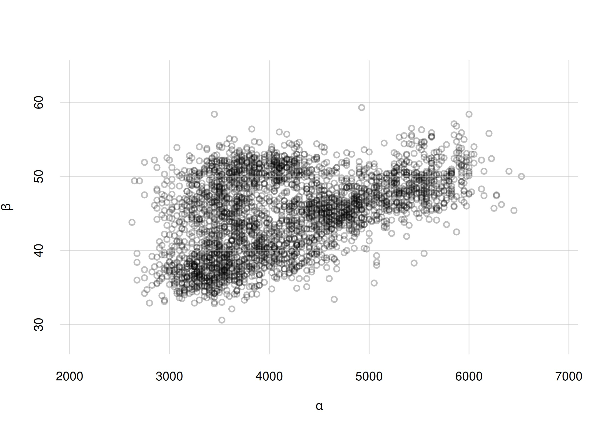

24 A categorization of inferences
\(\DeclarePairedDelimiter{\set}{\{}{\}}\)
In this and the next few chapters we shall focus on particular kinds of inferences and predictions, and on how an AI agent should do them. Later on we shall also explore ways to make our agent faster, at the expense of optimality; most present-day machine-learning algorithms are examples of such fast, sub-optimal approximations.
24.1 A task- and information-oriented categorization of some inference problems
All sorts of inferences must be faced in everyday life and in highly technological applications; in situations without serious consequences and in others, like medicine, where lives may be at stake.
Such variety of inferences cannot be separated into clear-cut categories. But an informal categorization can provide a starting point to examine some new kind of inference that we may have to face. Many inference tasks will fall in between categories; every data-engineering or data-science problem is unique.
The important questions for us are these:
- What do we need or want to infer?
- From which kind of information?
So let’s focus on a categorization based on the types of desired information and of available information. For simplicity here we exclude all tasks that require an agent to continuously and actively interact with its environment for acquiring information, making choices, getting feedback, and so on. These tasks are the domain of Decision Theory in its most complex form, with ramified decisions, strategies, and possibly with the interaction among several decision-making agents. To explore and analyse this complex kind of tasks is beyond the purpose of this course.
We focus on tasks where multiple “instances” with similar characteristics are involved, and the agent has some question related to a “new instance”. According to the conceptual framework developed in the Data II part (chapters 20–23), we can view these “instances” as units of a practically infinite population. The “characteristics” that the agent observed or must guess are variates common to all these units.
Remember that you can adopt any terminology you like. If you prefer “instance” and “characteristics” or some other words to “unit” and “variate”, then use them. What’s important is that you understand the ideas and methods behind these words, and that you can exactly explain what you mean to others.
24.2 Flexible categorization using probability notation
An extremely useful way to express an inference task is directly through probability notation “\(\mathrm{P}(\dotso \nonscript\:\vert\nonscript\:\mathopen{} \dotso)\)”, once the relevant variates – or more generally the relevant sentences (ch. 6) – have been defined. It has two main advantages:
- It directly gives us the probability or probabilities that the agent eventually needs to calculate.
- It often eliminates ambiguity or vagueness in the inference task.
This latter advantage is often highly underestimated. As was briefly mentioned in § 6.2, many apparent difficulties in inference tasks arise not because of computational difficulties, but because it isn’t clear what the inference is about. You can witness, for example, different conclusions and debates in trying to determine “which model ois better” – which is not a clear inference at all, until it is precisely stated what “better” means, how it is measured, and by which variate it is represented.
It is therefore to your advantage if you learn and practice to translate an inference and its information into probability notation, and vice versa to read from probability notation what type of inference is being drawn.
We shall use this probability-notation method for delineating approximate categories of inference. Recall (§ 5.3) that in probability notation
\[\mathrm{P}(\text{\color[RGB]{238,102,119}\small[proposal]}\nonscript\:\vert\nonscript\:\mathopen{}\text{\color[RGB]{34,136,51}\small[conditional]} \mathbin{\mkern-0.5mu,\mkern-0.5mu}\mathsfit{I})\]
the proposal contains what the agent’s belief is about, and the conditional contains what’s supposed to be known to the agent, together with the background information \(\mathsfit{I}\).
Notation
First let’s introduce some symbol conventions to be used in this and the next chapters. We consider a population, its units being the instances where an agent learned or guessed something. Denote the variates involved in the inferences by letters like \(X\), \(Y\), etc; keep in mind that each of these variates might itself be a composite one, for instance \(X = (A, B)\). Subscripts, usually \({}_1\) , \({}_2\) , \({}_n\) , etc., identify the individual instances; each subscript might be associated to the time or place of the instance.
Focus on the inference that the agent is currently making, let’s say on unit \(N+1\). We can then divide all population variates intro three roles:
The predictands1 are the variates that the agent must guess for this unit, because it doesn’t know their values. We shall usually denote the predictands, jointly, with the symbol \(Y\). An inference always has a predictand.
The predictors are variates that the agent has observed in this unit; it knows their value. We shall usually denote the predictors, jointly, with the symbol \(X\). An inference may not have any predictors.
The nuisance variates are the remaining ones, which the agent neither needs to guess nor has observed in unit; it doesn’t know their values, and is not interested in their values. Nuisance variates, jointly, shall usually be denoted by \(W\). An inference may not have any nuisance variates.
1 literally “what has to be predicted”
In probability notation these roles are clear as we write
\[ \begin{aligned} &\text{\small population variates: }\ Y, X, W \\[1ex] &\mathrm{P}(Y_{N+1} \mathclose{}\mathord{\nonscript\mkern 0mu\textrm{\small=}\nonscript\mkern 0mu}\mathopen{}y_{N+1} \nonscript\:\vert\nonscript\:\mathopen{} X_{N+1}\mathclose{}\mathord{\nonscript\mkern 0mu\textrm{\small=}\nonscript\mkern 0mu}\mathopen{}x_{N+1} \mathbin{\mkern-0.5mu,\mkern-0.5mu}\dotso) \end{aligned} \]
where the dots \(\dotso\) do not refer to the present unit. You see that, for this \((N+1)\)th unit, the predictand “\(Y\)” is in the proposal, at the left of the conditional bar; this is what the agent’s belief is about. In the conditional, at the right of the conditional bar, we see there’s a predictor “\(X\)”; this means that its value is assumed to be known to the agent. We don’t see the variate “\(W\)”: not on the left of the conditional bar, because this is not what the belief is about; and not on the right, because its value is unknown. But we know this is a population variate; thus it is a nuisance variate. Note that the variate \(W\) might be known to the agent for other units.2
2 In machine learning, instead of “predictand” the terms “dependent variable”, “class” or “label” (for nominal variates) are often; instead of “predictor”, the terms “independent variable” or “feature” are often used.
The agent generally has mixed information about the three groups of variates for other units \(1, 2, \dotsc, N\), usually called the training data. It may know \(Y\) for one unit, \(X\) for another, \(W\) for another, \((Y,X)\) for another still, and so on. Consider for example this expression:
\[ \mathrm{P}(Y_{5}\mathclose{}\mathord{\nonscript\mkern 0mu\textrm{\small=}\nonscript\mkern 0mu}\mathopen{}y_{5} \nonscript\:\vert\nonscript\:\mathopen{} X_{5}\mathclose{}\mathord{\nonscript\mkern 0mu\textrm{\small=}\nonscript\mkern 0mu}\mathopen{}x_{5} \mathbin{\mkern-0.5mu,\mkern-0.5mu} Y_{4}\mathclose{}\mathord{\nonscript\mkern 0mu\textrm{\small=}\nonscript\mkern 0mu}\mathopen{}y_{4} \mathbin{\mkern-0.5mu,\mkern-0.5mu} Y_{3}\mathclose{}\mathord{\nonscript\mkern 0mu\textrm{\small=}\nonscript\mkern 0mu}\mathopen{}y_{3} \mathbin{\mkern-0.5mu,\mkern-0.5mu}X_{3}\mathclose{}\mathord{\nonscript\mkern 0mu\textrm{\small=}\nonscript\mkern 0mu}\mathopen{}x_{3} \mathbin{\mkern-0.5mu,\mkern-0.5mu} X_{2}\mathclose{}\mathord{\nonscript\mkern 0mu\textrm{\small=}\nonscript\mkern 0mu}\mathopen{}x_{2} \mathbin{\mkern-0.5mu,\mkern-0.5mu} Y_{1}\mathclose{}\mathord{\nonscript\mkern 0mu\textrm{\small=}\nonscript\mkern 0mu}\mathopen{}y_{1} \mathbin{\mkern-0.5mu,\mkern-0.5mu}W_{1}\mathclose{}\mathord{\nonscript\mkern 0mu\textrm{\small=}\nonscript\mkern 0mu}\mathopen{}w_{1} \mathbin{\mkern-0.5mu,\mkern-0.5mu} \mathsfit{I}) \]
This agent, having background information \(\mathsfit{I}\), is calculating its belief that the predictand \(Y\) has value \(y_{5}\) for unit #5. It knows the predictor \(X\) for this unit. The agent also knows the variate \(Y\), but not \(X\), for unit #4; it knows both \(Y\) and \(X\) for unit #3; it knows only \(X\) for unit #2; finally it knows \(Y\) and \(W\) for unit #1. This task might have additional variates, whose values are unknown to the agent for all units so far – but which may come into play for future units.
In fact, if any of these variate is composite, say \(Y = (A,B)\), the agent may have information only about component variate \(A\) rather than for all \(Y\). As already remarked, the number of possibilities is endless.
24.3 Examples of inference tasks
Let’s have an overview of some common inference tasks
New unit: given vs generated
A first important distinction can be made between
Tasks where an agent is given a new unit, of which it must guess some or all variates.
Tasks where an agent must generate a new unit, with all its variates.
Examples of the first type of task are image generation and word generation, which Large Language Models do. An algorithm is given a collection of images or a corpus of texts, and is asked to generate a new image or text based on, or “inspired” by, them.
It’s very important to keep in mind that despite the use of the words “generate” and “guess”, both tasks above require the computation of probabilities; that is, the agent must assess its beliefs. They are both inference tasks. In generation, the agent needs to assess what’s best to generate; in guessing, it needs to assess the possible guesses.
Indeed we shall see that these two types of task are actually quite close to each other from the point of view of Decision Theory & Probability Theory.
In machine learning, the terms “generative” and “discriminative” are sometimes associated with the two types of task above.
Guessing variates: all or some
Focusing on the second type of task above – the agent must make guesses about a unit given to it – we can further divide it into two subtypes:
- The agent must guess all variates of the new unit:
\[ \begin{aligned} &\text{\small population variates: }\ Y \\[1ex] &\mathrm{P}(Y_{N+1} \mathclose{}\mathord{\nonscript\mkern 0mu\textrm{\small=}\nonscript\mkern 0mu}\mathopen{}y_{N+1} \nonscript\:\vert\nonscript\:\mathopen{} \dotso) \end{aligned} \]
- The agent must guess some variates of the new unit, but can observe all others:
\[ \begin{aligned} &\text{\small population variates: }\ Y, X \\[1ex] &\mathrm{P}(Y_{N+1} \mathclose{}\mathord{\nonscript\mkern 0mu\textrm{\small=}\nonscript\mkern 0mu}\mathopen{}y_{N+1} \nonscript\:\vert\nonscript\:\mathopen{} X_{N+1}\mathclose{}\mathord{\nonscript\mkern 0mu\textrm{\small=}\nonscript\mkern 0mu}\mathopen{}x_{N+1} \mathbin{\mkern-0.5mu,\mkern-0.5mu}\dotso) \end{aligned} \]
An example of the first subtype of task is the “urgent vs non-urgent” problem of § 17.4: having observed incoming patients, some of which where urgent and some non-urgent, the agent must guess whether the next incoming patient will be urgent or not. No other kinds of information (transport, patient characteristics, or others) are available.
In machine learning, the terms “unsupervised learning” and “supervised learning” are sometimes associated with these two subtypes of task. But the association is loose. “Clustering” tasks for example, discussed below, are usually called “unsupervised” but they are examples of the second subtype above, where the agent has some predictors.
Information available in previous units
Finally we can further divide the second subtype above into two or three subsubtypes, depending on the information available to the agent about previous units:
- Predictor and predictand are known for all previous units \(N,\dotsc,1\):
\[
\begin{aligned}
&\text{\small population variates: }\ Y, X
\\[1ex]
&\mathrm{P}(Y_{N+1} \mathclose{}\mathord{\nonscript\mkern 0mu\textrm{\small=}\nonscript\mkern 0mu}\mathopen{}y_{N+1} \nonscript\:\vert\nonscript\:\mathopen{} X_{N+1}\mathclose{}\mathord{\nonscript\mkern 0mu\textrm{\small=}\nonscript\mkern 0mu}\mathopen{}x_{N+1} \mathbin{\mkern-0.5mu,\mkern-0.5mu}
Y_{N} \mathclose{}\mathord{\nonscript\mkern 0mu\textrm{\small=}\nonscript\mkern 0mu}\mathopen{}y_{N} \mathbin{\mkern-0.5mu,\mkern-0.5mu}X_{N}\mathclose{}\mathord{\nonscript\mkern 0mu\textrm{\small=}\nonscript\mkern 0mu}\mathopen{}x_{N} \mathbin{\mkern-0.5mu,\mkern-0.5mu}
\dotso
Y_{1} \mathclose{}\mathord{\nonscript\mkern 0mu\textrm{\small=}\nonscript\mkern 0mu}\mathopen{}y_{1} \mathbin{\mkern-0.5mu,\mkern-0.5mu}X_{1}\mathclose{}\mathord{\nonscript\mkern 0mu\textrm{\small=}\nonscript\mkern 0mu}\mathopen{}x_{1} \mathbin{\mkern-0.5mu,\mkern-0.5mu}
\mathsfit{I})
\end{aligned}
\]
- The predictor variate, but not the predictand one, is known for all previous units \(N,\dotsc,1\):
\[
\begin{aligned}
&\text{\small population variates: }\ Y, X
\\[1ex]
&\mathrm{P}(Y_{N+1} \mathclose{}\mathord{\nonscript\mkern 0mu\textrm{\small=}\nonscript\mkern 0mu}\mathopen{}y_{N+1} \nonscript\:\vert\nonscript\:\mathopen{} X_{N+1}\mathclose{}\mathord{\nonscript\mkern 0mu\textrm{\small=}\nonscript\mkern 0mu}\mathopen{}x_{N+1} \mathbin{\mkern-0.5mu,\mkern-0.5mu}
X_{N}\mathclose{}\mathord{\nonscript\mkern 0mu\textrm{\small=}\nonscript\mkern 0mu}\mathopen{}x_{N} \mathbin{\mkern-0.5mu,\mkern-0.5mu}
\dotso
X_{1}\mathclose{}\mathord{\nonscript\mkern 0mu\textrm{\small=}\nonscript\mkern 0mu}\mathopen{}x_{1} \mathbin{\mkern-0.5mu,\mkern-0.5mu}
\mathsfit{I})
\end{aligned}
\]
- The predictand variate, but not the predictor one, is known for all previous units \(N,\dotsc,1\):
\[
\begin{aligned}
&\text{\small population variates: }\ Y, X
\\[1ex]
&\mathrm{P}(Y_{N+1} \mathclose{}\mathord{\nonscript\mkern 0mu\textrm{\small=}\nonscript\mkern 0mu}\mathopen{}y_{N+1} \nonscript\:\vert\nonscript\:\mathopen{} X_{N+1}\mathclose{}\mathord{\nonscript\mkern 0mu\textrm{\small=}\nonscript\mkern 0mu}\mathopen{}x_{N+1} \mathbin{\mkern-0.5mu,\mkern-0.5mu}
Y_{N}\mathclose{}\mathord{\nonscript\mkern 0mu\textrm{\small=}\nonscript\mkern 0mu}\mathopen{}y_{N} \mathbin{\mkern-0.5mu,\mkern-0.5mu}
\dotso
Y_{1}\mathclose{}\mathord{\nonscript\mkern 0mu\textrm{\small=}\nonscript\mkern 0mu}\mathopen{}y_{1} \mathbin{\mkern-0.5mu,\mkern-0.5mu}
\mathsfit{I})
\end{aligned}
\]
An example of the first subsubtype of task above is image classification. The agent is for example given the following 128 × 128-pixel images (predictor) and character-labels (predictand) from the One Punch Man series:

and is then given one new 128 × 128-pixel image:

of which it must guess the character-label.
A pictorial representation of the probability notation for this case could be as follows:

where \({\color[RGB]{238,102,119}y} \in \set{\color[RGB]{238,102,119}{\small\verb;Saitama;}, {\small\verb;Fubuki;}, {\small\verb;Genos;}, {\small\verb;MetalBat;}, \dotsc \color[RGB]{0,0,0}}\).
An example similar to the second subtype is clustering. The agent is for example given the following set of points in \((\alpha, \beta)\) coordinates:

Each point is a unit, and the predictor variate is the pair of coordinates \((\alpha, \beta)\).
The agent must now guess the label of each point: this is the predictand. One possible guess could be the following:

This kind of inference can be expressed as follows:
\[ \begin{aligned} &\text{\small population variates: }\ \mathit{label}, \alpha, \beta \\[1ex] &\mathrm{P}( \mathit{label}_{N+1} \mathclose{}\mathord{\nonscript\mkern 0mu\textrm{\small=}\nonscript\mkern 0mu}\mathopen{}\dotso \,\mathbin{\mkern-0.5mu,\mkern-0.5mu}\, \dotso \,\mathbin{\mkern-0.5mu,\mkern-0.5mu}\, \mathit{label}_{1} \mathclose{}\mathord{\nonscript\mkern 0mu\textrm{\small=}\nonscript\mkern 0mu}\mathopen{}\dotso \nonscript\:\vert\nonscript\:\mathopen{} \alpha_{N+1} \mathclose{}\mathord{\nonscript\mkern 0mu\textrm{\small=}\nonscript\mkern 0mu}\mathopen{}\dotso \,\mathbin{\mkern-0.5mu,\mkern-0.5mu}\, \beta_{N+1} \mathclose{}\mathord{\nonscript\mkern 0mu\textrm{\small=}\nonscript\mkern 0mu}\mathopen{}\dotso \,\mathbin{\mkern-0.5mu,\mkern-0.5mu}\, \dotso \,\mathbin{\mkern-0.5mu,\mkern-0.5mu}\, \alpha_{1} \mathclose{}\mathord{\nonscript\mkern 0mu\textrm{\small=}\nonscript\mkern 0mu}\mathopen{}\dotso \,\mathbin{\mkern-0.5mu,\mkern-0.5mu}\, \beta_{1} \mathclose{}\mathord{\nonscript\mkern 0mu\textrm{\small=}\nonscript\mkern 0mu}\mathopen{}\dotso \,\mathbin{\mkern-0.5mu,\mkern-0.5mu}\, \mathsfit{I}) \end{aligned} \]
In machine learning, the term “supervised learning” typically refer to the first subsubtype above.
The term “unsupervised learning” can refer to the second subsubtype.
The third subsubtype is very rarely considered in machine learning, yet it is not an unrealistic task.
The types, subtypes, subsubtypes described above are obviously not mutually exclusive or comprehensive. Consider for instance the following task, which doesn’t fit into any of the types discussed above. The agent must guess the predictand \(Y\) for the new unit #3, observing that its predictor \(X\) has value \(x_3\). Of two previous units, the agent knows the predictor value \(x_1\) of the first, and the predictand value \(y_2\) of the second. This task is expressed by
\[ \begin{aligned} &\text{\small population variates: }\ Y, X \\[1ex] &\mathrm{P}(Y_{3}\mathclose{}\mathord{\nonscript\mkern 0mu\textrm{\small=}\nonscript\mkern 0mu}\mathopen{}y_3 \nonscript\:\vert\nonscript\:\mathopen{} X_{3}\mathclose{}\mathord{\nonscript\mkern 0mu\textrm{\small=}\nonscript\mkern 0mu}\mathopen{}x_3 \, \mathbin{\mkern-0.5mu,\mkern-0.5mu}\, Y_{2}\mathclose{}\mathord{\nonscript\mkern 0mu\textrm{\small=}\nonscript\mkern 0mu}\mathopen{}y_{2} \mathbin{\mkern-0.5mu,\mkern-0.5mu} X_{1}\mathclose{}\mathord{\nonscript\mkern 0mu\textrm{\small=}\nonscript\mkern 0mu}\mathopen{}x_{1} \mathbin{\mkern-0.5mu,\mkern-0.5mu}\mathsfit{I}) \end{aligned} \]
In machine learning, hybrid situations like these are categorized as “missing data” or “imputation”.
Find an example, invented or realistic, for the last type of task discussed above:
\[ \begin{aligned} &\text{\small population variates: }\ Y, X \\[1ex] &\mathrm{P}(Y_{N+1} \mathclose{}\mathord{\nonscript\mkern 0mu\textrm{\small=}\nonscript\mkern 0mu}\mathopen{}y_{N+1} \nonscript\:\vert\nonscript\:\mathopen{} X_{N+1}\mathclose{}\mathord{\nonscript\mkern 0mu\textrm{\small=}\nonscript\mkern 0mu}\mathopen{}x_{N+1} \mathbin{\mkern-0.5mu,\mkern-0.5mu} Y_{N}\mathclose{}\mathord{\nonscript\mkern 0mu\textrm{\small=}\nonscript\mkern 0mu}\mathopen{}y_{N} \mathbin{\mkern-0.5mu,\mkern-0.5mu} \dotso Y_{1}\mathclose{}\mathord{\nonscript\mkern 0mu\textrm{\small=}\nonscript\mkern 0mu}\mathopen{}y_{1} \mathbin{\mkern-0.5mu,\mkern-0.5mu} \mathsfit{I}) \end{aligned} \]
What kind of task does the following probability express? what kind of peculiarities does it have?
\[ \mathrm{P}( Y_{N+1}\mathclose{}\mathord{\nonscript\mkern 0mu\textrm{\small=}\nonscript\mkern 0mu}\mathopen{}y_{N+1} \nonscript\:\vert\nonscript\:\mathopen{} X_{N+1}\mathclose{}\mathord{\nonscript\mkern 0mu\textrm{\small=}\nonscript\mkern 0mu}\mathopen{}x_{N+1} \,\mathbin{\mkern-0.5mu,\mkern-0.5mu}\, X_{N}\mathclose{}\mathord{\nonscript\mkern 0mu\textrm{\small=}\nonscript\mkern 0mu}\mathopen{}x_{N} \mathbin{\mkern-0.5mu,\mkern-0.5mu} W_{N}\mathclose{}\mathord{\nonscript\mkern 0mu\textrm{\small=}\nonscript\mkern 0mu}\mathopen{}w_{N} \,\mathbin{\mkern-0.5mu,\mkern-0.5mu}\, X_{1}\mathclose{}\mathord{\nonscript\mkern 0mu\textrm{\small=}\nonscript\mkern 0mu}\mathopen{}x_{1} \mathbin{\mkern-0.5mu,\mkern-0.5mu} W_{1}\mathclose{}\mathord{\nonscript\mkern 0mu\textrm{\small=}\nonscript\mkern 0mu}\mathopen{}w_{1} \,\mathbin{\mkern-0.5mu,\mkern-0.5mu}\, \mathsfit{I}) \]
24.4 The underlying distribution
From the discussion and all examples above we can draw the following conclusion:
This is the condition for any inference algorithm to be optimal and self-consistent. The less an algorithm satisfies that condition, the less optimal and the less consistent it is.
A remarkable feature of all the probabilities discussed in the above task categorization is that they can all be calculated from one and the same probability distribution. We briefly discussed and used this feature in chapter 17.
A conditional probability such as \(\mathrm{P}(\mathsfit{\color[RGB]{238,102,119}A}\nonscript\:\vert\nonscript\:\mathopen{}\mathsfit{\color[RGB]{34,136,51}B} \mathbin{\mkern-0.5mu,\mkern-0.5mu}\mathsfit{I})\) can always be written, by the and-rule, as the ratio of two probabilities:
\[ \mathrm{P}(\mathsfit{\color[RGB]{238,102,119}A}\nonscript\:\vert\nonscript\:\mathopen{}\mathsfit{\color[RGB]{34,136,51}B} \mathbin{\mkern-0.5mu,\mkern-0.5mu}\mathsfit{I}) = \frac{ \mathrm{P}(\mathsfit{\color[RGB]{238,102,119}A}\mathbin{\mkern-0.5mu,\mkern-0.5mu}\mathsfit{\color[RGB]{34,136,51}B} \nonscript\:\vert\nonscript\:\mathopen{} \mathsfit{I}) }{ \mathrm{P}(\mathsfit{\color[RGB]{34,136,51}B} \nonscript\:\vert\nonscript\:\mathopen{} \mathsfit{I}) } \]
Therefore we have, for the probabilities of some of the tasks above,
\[ \begin{aligned} &\mathrm{P}(\color[RGB]{238,102,119} Y_{N+1}\mathclose{}\mathord{\nonscript\mkern 0mu\textrm{\small=}\nonscript\mkern 0mu}\mathopen{}y_{N+1} \color[RGB]{0,0,0}\nonscript\:\vert\nonscript\:\mathopen{} \color[RGB]{34,136,51} X_{N+1}\mathclose{}\mathord{\nonscript\mkern 0mu\textrm{\small=}\nonscript\mkern 0mu}\mathopen{}x_{N+1} \, \mathbin{\mkern-0.5mu,\mkern-0.5mu}\, Y_{N}\mathclose{}\mathord{\nonscript\mkern 0mu\textrm{\small=}\nonscript\mkern 0mu}\mathopen{}y_{N} \mathbin{\mkern-0.5mu,\mkern-0.5mu} X_{N}\mathclose{}\mathord{\nonscript\mkern 0mu\textrm{\small=}\nonscript\mkern 0mu}\mathopen{}x_{N} \mathbin{\mkern-0.5mu,\mkern-0.5mu}\dotsb \mathbin{\mkern-0.5mu,\mkern-0.5mu} Y_{1}\mathclose{}\mathord{\nonscript\mkern 0mu\textrm{\small=}\nonscript\mkern 0mu}\mathopen{}y_{1} \mathbin{\mkern-0.5mu,\mkern-0.5mu} X_{1}\mathclose{}\mathord{\nonscript\mkern 0mu\textrm{\small=}\nonscript\mkern 0mu}\mathopen{}x_{1} \color[RGB]{0,0,0}\mathbin{\mkern-0.5mu,\mkern-0.5mu}\mathsfit{I}) \\[2ex] &\qquad{}= \frac{ \mathrm{P}(\color[RGB]{238,102,119} Y_{N+1}\mathclose{}\mathord{\nonscript\mkern 0mu\textrm{\small=}\nonscript\mkern 0mu}\mathopen{}y_{N+1} \color[RGB]{0,0,0}\mathbin{\mkern-0.5mu,\mkern-0.5mu} \color[RGB]{34,136,51} X_{N+1}\mathclose{}\mathord{\nonscript\mkern 0mu\textrm{\small=}\nonscript\mkern 0mu}\mathopen{}x_{N+1} \, \mathbin{\mkern-0.5mu,\mkern-0.5mu}\, Y_{N}\mathclose{}\mathord{\nonscript\mkern 0mu\textrm{\small=}\nonscript\mkern 0mu}\mathopen{}y_{N} \mathbin{\mkern-0.5mu,\mkern-0.5mu} X_{N}\mathclose{}\mathord{\nonscript\mkern 0mu\textrm{\small=}\nonscript\mkern 0mu}\mathopen{}x_{N} \mathbin{\mkern-0.5mu,\mkern-0.5mu}\dotsb \mathbin{\mkern-0.5mu,\mkern-0.5mu} Y_{1}\mathclose{}\mathord{\nonscript\mkern 0mu\textrm{\small=}\nonscript\mkern 0mu}\mathopen{}y_{1} \mathbin{\mkern-0.5mu,\mkern-0.5mu} X_{1}\mathclose{}\mathord{\nonscript\mkern 0mu\textrm{\small=}\nonscript\mkern 0mu}\mathopen{}x_{1} \color[RGB]{0,0,0}\nonscript\:\vert\nonscript\:\mathopen{} \mathsfit{I}) }{ \mathrm{P}( \color[RGB]{34,136,51} X_{N+1}\mathclose{}\mathord{\nonscript\mkern 0mu\textrm{\small=}\nonscript\mkern 0mu}\mathopen{}x_{N+1} \, \mathbin{\mkern-0.5mu,\mkern-0.5mu}\, Y_{N}\mathclose{}\mathord{\nonscript\mkern 0mu\textrm{\small=}\nonscript\mkern 0mu}\mathopen{}y_{N} \mathbin{\mkern-0.5mu,\mkern-0.5mu} X_{N}\mathclose{}\mathord{\nonscript\mkern 0mu\textrm{\small=}\nonscript\mkern 0mu}\mathopen{}x_{N} \mathbin{\mkern-0.5mu,\mkern-0.5mu}\dotsb \mathbin{\mkern-0.5mu,\mkern-0.5mu} Y_{1}\mathclose{}\mathord{\nonscript\mkern 0mu\textrm{\small=}\nonscript\mkern 0mu}\mathopen{}y_{1} \mathbin{\mkern-0.5mu,\mkern-0.5mu} X_{1}\mathclose{}\mathord{\nonscript\mkern 0mu\textrm{\small=}\nonscript\mkern 0mu}\mathopen{}x_{1} \color[RGB]{0,0,0}\nonscript\:\vert\nonscript\:\mathopen{} \mathsfit{I}) } \\[2em] &\mathrm{P}(\color[RGB]{238,102,119} Y_{N+1}\mathclose{}\mathord{\nonscript\mkern 0mu\textrm{\small=}\nonscript\mkern 0mu}\mathopen{}y_{N+1} \color[RGB]{0,0,0}\nonscript\:\vert\nonscript\:\mathopen{} \color[RGB]{34,136,51} X_{N+1}\mathclose{}\mathord{\nonscript\mkern 0mu\textrm{\small=}\nonscript\mkern 0mu}\mathopen{}x_{N+1} \, \mathbin{\mkern-0.5mu,\mkern-0.5mu}\, X_{N}\mathclose{}\mathord{\nonscript\mkern 0mu\textrm{\small=}\nonscript\mkern 0mu}\mathopen{}x_{N} \mathbin{\mkern-0.5mu,\mkern-0.5mu}\dotsb\mathbin{\mkern-0.5mu,\mkern-0.5mu} X_{1}\mathclose{}\mathord{\nonscript\mkern 0mu\textrm{\small=}\nonscript\mkern 0mu}\mathopen{}x_{1} \color[RGB]{0,0,0}\mathbin{\mkern-0.5mu,\mkern-0.5mu}\mathsfit{I}) \\[2ex] &\qquad{}= \frac{ \mathrm{P}(\color[RGB]{238,102,119} Y_{N+1}\mathclose{}\mathord{\nonscript\mkern 0mu\textrm{\small=}\nonscript\mkern 0mu}\mathopen{}y_{N+1} \color[RGB]{0,0,0}\mathbin{\mkern-0.5mu,\mkern-0.5mu} \color[RGB]{34,136,51} X_{N+1}\mathclose{}\mathord{\nonscript\mkern 0mu\textrm{\small=}\nonscript\mkern 0mu}\mathopen{}x_{N+1} \, \mathbin{\mkern-0.5mu,\mkern-0.5mu}\, X_{N}\mathclose{}\mathord{\nonscript\mkern 0mu\textrm{\small=}\nonscript\mkern 0mu}\mathopen{}x_{N} \mathbin{\mkern-0.5mu,\mkern-0.5mu}\dotsb\mathbin{\mkern-0.5mu,\mkern-0.5mu} X_{1}\mathclose{}\mathord{\nonscript\mkern 0mu\textrm{\small=}\nonscript\mkern 0mu}\mathopen{}x_{1} \color[RGB]{0,0,0}\nonscript\:\vert\nonscript\:\mathopen{} \mathsfit{I}) }{ \mathrm{P}( \color[RGB]{34,136,51} X_{N+1}\mathclose{}\mathord{\nonscript\mkern 0mu\textrm{\small=}\nonscript\mkern 0mu}\mathopen{}x_{N+1} \, \mathbin{\mkern-0.5mu,\mkern-0.5mu}\, X_{N}\mathclose{}\mathord{\nonscript\mkern 0mu\textrm{\small=}\nonscript\mkern 0mu}\mathopen{}x_{N} \mathbin{\mkern-0.5mu,\mkern-0.5mu}\dotsb\mathbin{\mkern-0.5mu,\mkern-0.5mu} X_{1}\mathclose{}\mathord{\nonscript\mkern 0mu\textrm{\small=}\nonscript\mkern 0mu}\mathopen{}x_{1} \color[RGB]{0,0,0}\nonscript\:\vert\nonscript\:\mathopen{} \mathsfit{I}) } \end{aligned} \]
We also know the marginalization rule (chapter 16.1): any quantity \(\color[RGB]{204,187,68}C\) with values \(\color[RGB]{204,187,68}c\) can be introduced into the proposal of a probability via the or-rule:
\[ \mathrm{P}( {\color[RGB]{34,136,51}\boldsymbol{\dotsb}} \nonscript\:\vert\nonscript\:\mathopen{} \mathsfit{I}) = \sum_{\color[RGB]{204,187,68}c}\mathrm{P}({\color[RGB]{204,187,68}C\mathclose{}\mathord{\nonscript\mkern 0mu\textrm{\small=}\nonscript\mkern 0mu}\mathopen{}c} \mathbin{\mkern-0.5mu,\mkern-0.5mu}{\color[RGB]{34,136,51}\boldsymbol{\dotsb}} \nonscript\:\vert\nonscript\:\mathopen{} \mathsfit{I}) \]
Using the marginalization rule we find these final expressions of the probabilities for some of the tasks discussed so far:
All these formulae, even for hybrid tasks, involve sums and ratios of only one distribution:
\[\boldsymbol{ \mathrm{P}( Y_{N+1}\mathclose{}\mathord{\nonscript\mkern 0mu\textrm{\small=}\nonscript\mkern 0mu}\mathopen{}y_{N+1} \mathbin{\mkern-0.5mu,\mkern-0.5mu} X_{N+1}\mathclose{}\mathord{\nonscript\mkern 0mu\textrm{\small=}\nonscript\mkern 0mu}\mathopen{}x_{N+1} \mathbin{\mkern-0.5mu,\mkern-0.5mu}\dotsb \mathbin{\mkern-0.5mu,\mkern-0.5mu} Y_{1}\mathclose{}\mathord{\nonscript\mkern 0mu\textrm{\small=}\nonscript\mkern 0mu}\mathopen{}y_{1} \mathbin{\mkern-0.5mu,\mkern-0.5mu} X_{1}\mathclose{}\mathord{\nonscript\mkern 0mu\textrm{\small=}\nonscript\mkern 0mu}\mathopen{}x_{1} \nonscript\:\vert\nonscript\:\mathopen{} \mathsfit{I}) } \]
Stop for a moment and think about the consequences:
An agent that can perform one of the tasks above can, in principle, also perform all other tasks.
This is why a perfect agent, working with probability, in principle does not have to worry about “supervised”, “unsupervised”, “missing data”, “imputation”, and similar situations. This also shows that all these task typologies are much closer to one another than it might look like from the perspective of current machine-learning methods.
The acronym OPM  can stand for Optimal Predictor Machine or Omni-Predictor Machine
can stand for Optimal Predictor Machine or Omni-Predictor Machine
The probability distribution above encodes the agent’s background knowledge and assumptions; different agents differ only in the values of that distribution.
If two agents yield different probability values in the same task, with the same variates and same training data, the difference must come from the joint probability distribution above. And, since the data given to the two agents are exactly the same, the difference must lie in the agents’ background information \(\mathsfit{I}\).
Data cannot “speak for themselves”
Given some data, we can choose two different joint distributions for these data, and therefore get different results in our inferences and tasks. This means that the data alone cannot determine the result: specific background information and assumptions, whether acknowledged or not, always affect the result.
The qualification “in principle” in the first consequence is important. Some of the sums that enter the formulae above are computationally extremely expensive and, with current technologies and maths techniques, cannot be performed within a reasonable time. But new technologies and new maths discoveries could make these calculations possible. This is why a data engineer cannot simply brush them aside and forget them.
As regards the third consequence, we shall see that there are different states of knowledge which can converge to the same results, as the number of training data increases.
In a previous example of “hybrid” task we had the probability distribution
\[ \mathrm{P}( Y_{3}\mathclose{}\mathord{\nonscript\mkern 0mu\textrm{\small=}\nonscript\mkern 0mu}\mathopen{}y \nonscript\:\vert\nonscript\:\mathopen{} X_{3}\mathclose{}\mathord{\nonscript\mkern 0mu\textrm{\small=}\nonscript\mkern 0mu}\mathopen{}x \, \mathbin{\mkern-0.5mu,\mkern-0.5mu}\, Y_{2}\mathclose{}\mathord{\nonscript\mkern 0mu\textrm{\small=}\nonscript\mkern 0mu}\mathopen{}y_{2} \mathbin{\mkern-0.5mu,\mkern-0.5mu} X_{1}\mathclose{}\mathord{\nonscript\mkern 0mu\textrm{\small=}\nonscript\mkern 0mu}\mathopen{}x_{1} \mathbin{\mkern-0.5mu,\mkern-0.5mu}\mathsfit{I}) \]
Rewrite it in terms of the underlying joint distribution.
24.5 Plan for the next few chapters
Our goal in building an “Optimal Predictor Machine” is now clear: we must find a way to

assign the joint probability distribution above, in such a way that it reflects some reasonable background information
encode the distribution in a computationally useful way
The “encode” goal sounds quite challenging, because the number \(N\) of units can in principle be infinite; we have an infinite probability distribution.
In the next Inference III part we shall see that partially solving the “assign” goal actually makes the “encode” goal feasible.
One question arises if we now look at present-day machine-learning algorithms. Many popular machine-learning algorithms don’t give us probabilities about values. They return one definite value. How do we reconcile this with the probabilistic point of view above? We shall answer this question in full in the last chapters; but a short, intuitive answer can already be given now.
If there are several possible correct answers to a given guess, but a machine-learning algorithm gives us only one answer, then the algorithm must have internally chosen one of them. In other words, the machine-learning algorithm is internally doing decision-making. We know from chapters 2 and 3 that this process should obey Decision Theory and therefore must involve:
the probabilities of the possible correct answers
the utilities of the possible answer choices
Non-probabilistic machine-learning algorithms must therefore be approximations of an Optimal Predictor Machine that, after computing probabilities, selects one particular answer by using utilities.